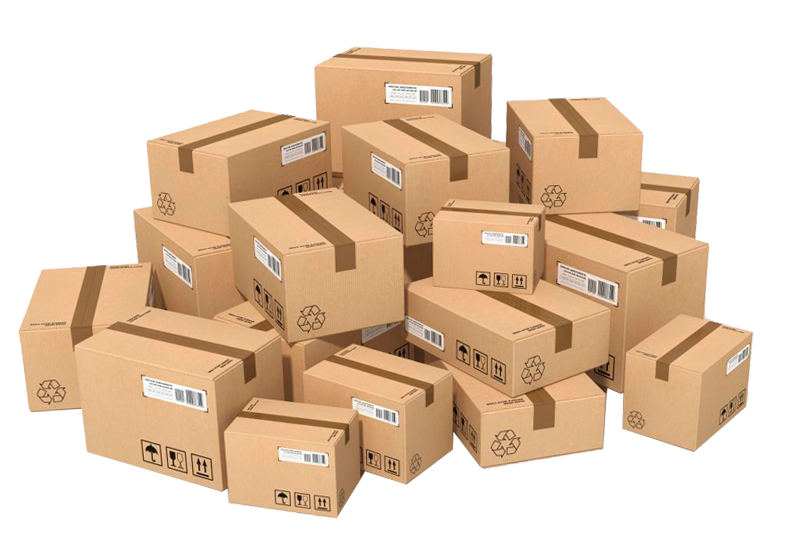
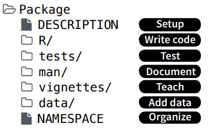
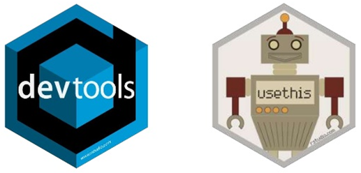
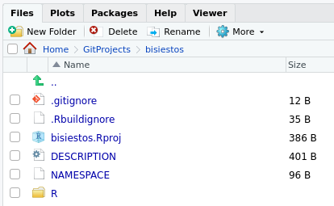
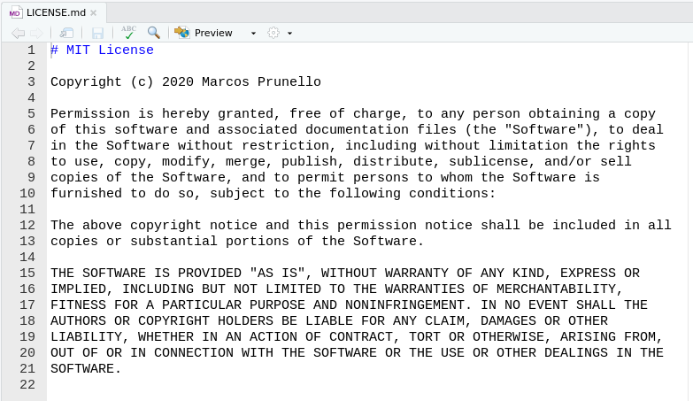

install.packages(c("devtools", "dplyr", "available"))Creación de paquetes
Guía detallada
Comencemos…
Preparativos
Para poder seguir este tutorial, necesitás tener instalados los siguientes paquetes:
Además, si usás Windows necesitás descargar el programa Rtools desde este link e instalarlo en tu computadora.
¿Por qué podríamos considerar crear un paquete?
Un paquete de R es la unidad básica para la distribución de código de R, que reúne de forma estructurada funciones, datos, archivos con documentación y testeos.

Crear un paquete nos da la oportunidad de:
Compartir de forma sencilla y rápida el trabajo que realizamos y que muchas veces queda sin difusión, aportándole visibilidad. Esto incluye:
- Metodología nueva o código desarrollado en tesinas y tesis.
- Código para realizar tareas dentro del equipo de trabajo.
- Código que acompañe a los trabajos de investigación publicados.
- Material didáctico creado para dar clases o estudiar.
Organizar el trabajo dentro de los equipos de trabajo o de investigación. Un paquete puede ser una buena manera de cerrar una tesina o publicación, dejando código organizado, entendible y que pueda servir de punto de partida para otros estudiantes o para nosotros cuando continuemos en el futuro. De la misma forma, encerrar en un paquete rutinas de trabajo puede servir para estandarizar protocolos de trabajo en empresas.
Realizar nuevas publicaciones. Los paquetes se pueden publicar en revistas como Journal of Statistical Software o Bioconductor. También sirven como antecedentes en los sistemas nacionales de registro de actividades académicas (CVAR, Sigeva, etc.)
Darnos a conocer en el ambiente regional de la Estadística y “ciencia de datos”, ya que implica una presencia en la virtualidad, teniendo hoy en día muchos intercambios que se originan a partir de la difusión en redes sociales.
Repositorios de paquetes
Un repositorio es un lugar en el cual se alojan los paquetes para que la gente pueda acceder a ellos e instalarlos en sus propios sistemas.
Los cuatro repositorios más populares son:
- CRAN (Comprehensive R Archive Network): es el repositorio oficial compuesto por una serie de servidores coordinados por la R Foundation. Para que un paquete pueda ser publicado acá tiene que pasar varios testeos y regirse según la política de la organización.
- Bioconductor: es un repositorio específico para paquetes relacionados a la Bioinformática y al análisis de datos biológicos. Tiene un sistema propio de revisión.
- rOpenSci: es una organización que promueve las buenas prácticas en la ciencia de datos y la investigación reproducible y ha creado su propio repositorio de paquetes.
- GitHub: no es exclusivo de R, pero es un repositorio que aloja muchísimos proyectos de código abierto y que provee un contexto muy bueno para el desarrollo colaborativo de software al estar asociado al sistema de control de versiones git. Suele ser la plataforma de lanzamiento de paquetes que finalmente se publican en otros repositorios. No tiene un proceso de revisión.
A ver qué sabemos sobre paquetes…
Tratá de responder las siguientes preguntas:
- ¿Cómo se instala un paquete desde CRAN?
- ¿Cómo se instala un paquete desde GitHub?
- ¿Qué sucede en la computadora cuando instalamos un paquete?
- ¿Qué es una librería (library)?
- ¿Dónde está la librería que se usa por default en tu computadora? ¿En qué librerías se buscan los paquetes cuando los querés cargar?
- ¿Cuántos paquetes tenés instalados?
- ¿Cómo adjuntás un paquete? ¿Qué significa esto?
Respuestas:
install.packages("nombre_paquete")devtools::install_github("nombre_usuario/nombre_paquete")- Instalar un paquete es descargar ciertos archivos a una carpeta en particular de la computadora.
- Una librería es una colección de paquetes, es decir, es la ubicación (carpeta) donde se alojan los paquetes. Podemos tener múltiples librerías en el disco duro. Una library es como una biblioteca y un package vendría a ser uno de sus libros.
.libPaths()
"/home/marcos/R/x86_64-pc-linux-gnu-library/3.6" "/usr/lib/R/library"- Vemos los paquetes instalados con:
nrow(installed.packages())[1] 649La instalación de R trae 14 paquetes base y 15 recomendados. Al resto, los vamos instalando nosotros:
library(dplyr)
Attaching package: 'dplyr'The following objects are masked from 'package:stats':
filter, lagThe following objects are masked from 'package:base':
intersect, setdiff, setequal, unioninstalled.packages() |>
as_tibble() |>
filter(Priority %in% c("base", "recommended")) |>
select(Package)# A tibble: 29 × 1
Package
<chr>
1 base
2 boot
3 class
4 cluster
5 codetools
6 compiler
7 datasets
8 foreign
9 graphics
10 grDevices
# ℹ 19 more rowsPara adjuntar (attach) un paquete se usa la función
library(), por ejemplo,library(ggplot2)(tal vez estemos más acostumbrados a decir cargar un paquete, pero en la jerga de R load es en realidad otra cosa)Cuando adjuntamos un paquete, hacemos que sus funciones puedan usarse. Recordando que una library es como una biblioteca y un package como uno de sus libros, se puede decir que usamos la función
library()para sacar un libro de la biblioteca.Técnicamente, adjuntar un paquete significa poner todas sus funciones en el camino de búsqueda de R (search path). Para hacer uso de una función, R primero necesita encontrarla, y para esto primero busca en el ambiente global. Si no la encuentra, empieza a buscar en orden en una serie de lugares definidos en el search path, recorriendo todos los paquetes que se habían adjuntado con
library(). Podemos ver el listado de los lugares donde R va a buscar con:
# Vemos los paquetes adjuntados
search() [1] ".GlobalEnv" "package:dplyr" "tools:quarto"
[4] "tools:quarto" "package:stats" "package:graphics"
[7] "package:grDevices" "package:utils" "package:datasets"
[10] "package:methods" "Autoloads" "package:base" # Vemos de qué librerías provienen
searchpaths() [1] ".GlobalEnv"
[2] "/home/marcos/R/x86_64-pc-linux-gnu-library/4.2/dplyr"
[3] "tools:quarto"
[4] "tools:quarto"
[5] "/usr/lib/R/library/stats"
[6] "/usr/lib/R/library/graphics"
[7] "/usr/lib/R/library/grDevices"
[8] "/usr/lib/R/library/utils"
[9] "/usr/lib/R/library/datasets"
[10] "/usr/lib/R/library/methods"
[11] "Autoloads"
[12] "/usr/lib/R/library/base" Hay 7 paquetes que siempre están adjuntados: rstats, graphics, methods, base, datasets, utils y grDevices.
La estructura de un paquete
- Crear un paquete no es más que seguir ciertas convenciones para organizar un conjunto de carpetas y archivos.
- Un paquete es una carpeta de nuestra computadora que tiene ciertos elementos obligatorios y algunos otros opcionales.

Elementos obligatorios:
- Archivo
Description: describe el contenido del paquete y establece cómo el paquete se va a relacionar con otros. - Carpeta
R: contiene el o los archivos de código de R con las funciones del paquete. - Carpeta
man: contiene archivos con la documentación del paquete, funciones y datasets. - Archivo
NAMESPACE: declara qué funciones nuestro paquete pone a disposición de los usuarios y de qué funciones de otros paquetes hace uso el nuestro, es decir, organiza las cosas para que R pueda encontrar todo lo que necesita cuando usa nuestro paquete.
Elementos opcionales:
- Carpeta
data: contiene objetos de R (por ejemplo,.Rdata) que contienen datos. - Carpeta
vignettes: contiene los tutoriales que muestran ejemplos de uso del paquete, generalmente escritos en Rmarkdown. - Archivo
NEWS: lleva el registro de los cambios implementados en las sucesivas versiones de un paquete. - Archivo
LICENSE: especifica los detalles de la licencia bajo la cual se distribuye el paquete. Es obligatorio bajo ciertos tipos de licencias (como la MIT). - Archivo
.Rbuildignore: lista los archivos y directorios que no deben ser incluidos a la hora de construir el paquete. - Carpeta
tests: incluye código para someter al paquete a diversos controles. - Carpeta
src: incluye archivos fuente para código compilado en otro lenguaje, por ejemplo, C++. - Carpeta
inst: para guardar algunas otras cosas.
Lo básico
En esta sección vamos a crear un paquete de R con muy pocos pasos. ¡A trabajar!
Elegir el nombre
El primer paso para crear un paquete tal vez sea uno de los más complicados: elegir un nombre.
Esto puede tener poca importancia si estamos haciendo un paquete de uso personal, pero si pensamos en compartirlo, entonces hay que dedicarle algo de tiempo.
Las reglas para elegir un nombre son:
- Sólo puede contener letras, números o puntos.
- Tener al menos dos caracteres.
- Empezar con una letra y no terminar con punto.
Algunas sugerencias incluyen elegir un nombre que sea fácil de googlear y de recordar, que tenga todas mayúsculas o minúsculas, que tal vez surja de agregarle una R a una palabra que existe para generar un nombre único.
Para practicar vamos a crear un paquete con una única función que determina si un año es o no bisiesto, por eso lo vamos a llamar
bisiestos(no, no se nos ocurrió otro nombre más original!).Con el paquete
availablese puede chequear si este nombre está disponible en los repositorios mencionados anteriormente.Además, este paquete nos avisa si el nombre elegido tiene algún significado especial del cual podemos no estar al tanto (revisa las webs de Wikipedia, Wiktionary y Urban Dictionary)
library(available) available("bisiestos")Chequear disponibilidad del nombre.
Crear el paquete
¡Basta de cháchara y manos a la masa! Vamos a crear nuestro paquete.
Para esto, vamos a recibir la ayuda de los paquetes
devtoolsyusethis, que incluyen un montón de funciones para simplificar la tarea de la creación de un nuevo paquete (alcanza con adjuntardevtoolsporque este a su vez adjunta ausethis).

library(devtools)- La forma más fácil de crear un paquete es haciendo uso de la función
create_package("nombre_paquete"), que va a generar una carpeta con el nombre provisto en el directorio de trabajo actual. Si queremos que se genere en otro lugar, debemos indicarle la ruta hacia el mismo, por ejemplo:create_package("C:/Users/Documentos/nombre_paquete"):
create_package("bisiestos")✓ Creating '/home/marcos/Documents/Clases/bisiestos/'
✓ Setting active project to '/home/marcos/Documents/Clases/bisiestos'
✓ Creating 'R/'
✓ Writing 'DESCRIPTION'
Package: bisiestos
Title: What the Package Does (One Line, Title Case)
Version: 0.0.0.9000
Authors@R (parsed):
* First Last <first.last@example.com> [aut, cre] (YOUR-ORCID-ID)
Description: What the package does (one paragraph).
License: `use_mit_license()`, `use_gpl3_license()` or friends to
pick a license
Encoding: UTF-8
LazyData: true
Roxygen: list(markdown = TRUE)
RoxygenNote: 7.1.1
✓ Writing 'NAMESPACE'
✓ Writing 'bisiestos.Rproj'
✓ Adding '^bisiestos\\.Rproj$' to '.Rbuildignore'
✓ Adding '.Rproj.user' to '.gitignore'
✓ Adding '^\\.Rproj\\.user$' to '.Rbuildignore'
✓ Opening '/home/marcos/Documents/Clases/bisiestos/' in new RStudio session
✓ Setting active project to '<no active project>'- Además de crear esta carpeta, se crea un proyecto de RStudio alojado allí, con el mismo nombre.
- Si estamos trabajando en RStudio, luego de correr
create_package()se abre dicho proyecto en una nueva sesión. - Esto es útil, porque al reconocer que nuestro proyecto trata del desarrollo de un paquete, RStudio provee algunas opciones especiales, como la pestaña
Builden el panel de arriba a la derecha. - Asegurate de cargar los paquetes
devtoolsyusethisen esta nueva sesión. - Podemos ver la existencia de la nueva carpeta
bisiestoscon los archivos recientemente creados en el panelFiles:

Comentarios adicionales: hay algunos componentes que se crean en esta carpeta y que, si bien podemos ignorar, acá comentamos de qué se tratan:
bisiestos.Rproj: guarda las opciones de configuración elegidas para el proyecto y sirve para abrirlo directamente desde el explorador de archivos de la compu..Rproj.user: carpeta oculta usada internamente por RStudio para guardar archivos temporarios..gitignore: archivo oculto que lista todos los archivos de R y RStudio que no deberían ser rastreados por el sistema de control de versiones, si el mismo fuese utilizado. No hace nada si no usamos git.
Crear los archivos de código
Para definir una función para nuestro paquete, abrimos un script de R y la escribimos como haríamos usualmente, con la excepción de que tenemos que tener en cuenta estas dos cosas:
- Hay que guardar el script en la carpeta
R. - Si usamos funciones de otros paquetes, las invocamos escribiendo
paquete::funcion(), por ejemplodplyr::mutate()(se podría evitar, pero es una buena práctica).
- Hay que guardar el script en la carpeta
Ni siquiera tenemos que molestarnos por crear el archivo en la carpeta correcta, eso se hace automáticamente con la función
use_r(), en la cual especificamos el nombre del archivo de código:
use_r("funciones")● Modify 'R/funciones.R'use_r()entonces se encarga de agregar un archivo.Ren la carpetaRdel paquete, para que nosotros escribamos nuestras funciones allí.- Vamos a agregar el código para la creación de una función que nos determina si un año provisto es bisiesto o no.
- Para repasar acerca de la escritura de funciones, podés volver a ver el material de nuestra clase sobre este tema o visitar estos capítulos de los libros R for Data Science o Advanced R.
- Copiá y guardá esto en el archivo recién creado:
es_bisiesto <- function(x = as.integer(format(Sys.Date(), "%Y"))) {
# Chequear argumento
stopifnot(is.numeric(x))
x <- as.integer(x)
# Determinar si es bisiesto
rtdo <- ((x %% 4 == 0) & (x %% 100 != 0)) | (x %% 400 == 0)
names(rtdo) <- x
# Devolver años bisiestos
return(rtdo)
}- Un paquete siempre tiene funciones que están pensadas para ser utilizadas por los usuarios luego de lo carguen con el famosos
library(...), es decir, son funciones que se deben exportar para que estén disponibles. Sin embargo, hay veces que definimos funciones auxiliares, que sólo son de uso interno del paquete, y que no es necesario que estén al alcance de los usuarios del paquete. - Para avisar cuáles son las funciones que se deben exportar hay que editar el archivo
NAMESPACE, que inicialmente luce así:
- Más adelante vamos a hablar más sobre este archivo y, si bien hay una sugerencia que nos dice que no lo editemos a mano, por ahora no le vamos a hacer caso y vamos a agregar la siguiente línea para establecer que la función
es_bisiesto()tiene que estar disponible para su uso luego de que alguien corralibrary(bisiestos):
export(es_bisiesto)- Seguramente nos interese ir probando nuestra función a medida que la estamos desarrollando o cuando creemos que la hemos finalizado.
- Es decir, nos interesa tenerla disponible en nuestro ambiente de trabajo para poder usarla.
- La idea natural sería correr el código anterior, o hacer
source(R/funciones.R). - Sin embargo,
devtoolsnos provee otro enfoque más adecuado para cargar todo el contenido del paquete que estamos desarrollando. - Se trata de la función
load_all(), o su atajoctrl + shift + l.
load_all()Loading bisiestos- Como resultado, todas las funciones definidas están listas para ser usadas (aunque no las veamos en el global environment):
es_bisiesto(2019) 2019
FALSE es_bisiesto(2020)2020
TRUE rtdo <- es_bisiesto(2020:2025)
rtdo 2020 2021 2022 2023 2024 2025
TRUE FALSE FALSE FALSE TRUE FALSE es_bisiesto(0) 0
TRUE es_bisiesto(-1:-5) -1 -2 -3 -4 -5
FALSE FALSE FALSE TRUE FALSE load_all()simula el proceso de construir, instalar y adjuntar el paquete.- A medida que el mismo va creciendo, con funciones internas y otras que se exportan, con funciones que se llaman unas a otras, con funciones que dependen de otros paquetes, probar nuestras funciones de esta forma nos da una idea más certera de cómo está quedando todo en el paquete.
- Entonces, se puede definir el siguiente flujo de trabajo (workflow) para la escritura del código:

Comentarios adicionales:
- Podés agregar tantos archivos de código como desees en la carpeta
R. - Generalmente, hay que pensar y diseñar un poco cómo vamos a guardar todo el código.
- Se sugiere agrupar funciones que tengan algo en común en un mismo archivo.
- Un archivo para cada función o todas las funciones en un mismo archivo son los puntos extremos que, generalmente, deberían evitarse.
Instalar el paquete
Aunque no lo creas, ¡ya hemos terminado la primera versión de nuestro paquete y estamos en condiciones de instalarlo!
Esto lo podemos hacer de varias formas:
- Corriendo
install() - Usando el atajo
ctrl + shift + b - Haciendo clic en
Install and restartde la pestañaBuild.
- Corriendo
install()==> R CMD INSTALL --no-multiarch --with-keep.source bisiestos
* installing to library ‘/home/marcos/R/x86_64-pc-linux-gnu-library/3.6’
* installing *source* package ‘bisiestos’ ...
** using staged installation
** R
** byte-compile and prepare package for lazy loading
No man pages found in package ‘bisiestos’
** help
*** installing help indices
** building package indices
** testing if installed package can be loaded from temporary location
** testing if installed package can be loaded from final location
** testing if installed package keeps a record of temporary installation path
* DONE (bisiestos)- Este proceso finaliza con la carga del paquete a través de
library(bisiestos), indicando que está listo para ser usado, como cualquier otro paquete, no solamente ahora, si no que ya podemos cerrar R y volver a emplearlo en cualquier otro momento. - ¡Felicitaciones! ¡Acabás de crear tu primer paquete de R! Si tenés ganas podés iniciar una nueva sesión, correr
library(bisiestos)y usar la funciónes_bisiesto().
Comentario adicionales:
Ahora ya puedo ver mi nuevo paquete en la library que usa mi compu. Sin embargo, si chusmeo esta carpeta, no tiene exactamente el mismo aspecto que la carpeta en la cual estoy desarrollando el paquete. ¿Por qué?
Respuesta: porque al desarrollar un paquete estamos interactuando con su versión source (source package), la cual constituye uno de los 5 estados en los cuales podemos encontrar un paquete:
- paquete source: es una carpeta con archivos guardados respetando cierta estructura (la carpeta que hemos creado con
create_package()) - paquete bundled: es un source paquete que fue comprimido a un único archivo (tiene extensión
.tar.gz), es independiente del sistema operativo que se use y resulta cómodo para enviar el paquete de un lado a otro. Si se lo descomprime luce casi igual que un source package. - paquete binary: también es un paquete comprimido a un único archivo, pero depende de cada sistema operativo, es lo que necesita alguien que quiera instalar un paquete pero no tenga herramientas para el desarrollo de los mismos que le permitan instalarlo (como Rtools). Hay binary packages para Windows y para macOS (Linux siempre instala desde el bundled). Si se lo descomprime, luce bastante distinto al source o al bundled package.
- paquete instalado: un bundled o binary package que fue descomprimido en una librería.
- paquete en memoria: paquete que fue adjuntado en la sesión de R mediante
library()y forma parte del searchpath.
- paquete source: es una carpeta con archivos guardados respetando cierta estructura (la carpeta que hemos creado con
Lo importante
Escribir la documentación
A la hora de armar un paquete (y de crear cualquier función en general) es importante dedicarle unos minutos a la creación de la documentación, es decir, describir cómo se usa cada función, para qué sirven los argumentos, aclarar qué tipo de resultado devuelve, proveer ejemplos para el uso, etc.
Esto es particularmente importante si pretendemos compartir el paquete con otras personas, pero también nos ayuda a nosotros para que no nos olvidamos en el futuro qué quisimos hacer y evitemos perder tiempo tratando de descifrar cómo andan las funciones que escribimos en el pasado.
Específicamente, documentar el paquete y sus funciones significa crear todas las páginas que vemos cuando exploramos el manual de ayuda.
Por suerte, armarlo no es tan complicado como uno lo podría imaginar, ya que contamos con la ayuda del paquete
roxygen2(lo difícil es escribir ayuda que sea entendible y útil para otros…).Este paquete provee pautas para escribir comentarios con un formato especial que incluyan toda la información requerida justo antes de la definición de la función.
Esto hace que tomemos la costumbre de escribir la documentación al mismo tiempo que creamos la función, sin que se vuelva una carga pesada para más adelante.
De la siguiente forma podemos documentar nuestra función
es_bisiesto():
#' La función es_bisiesto
#'
#' Esta función analiza si el año o los años provistos son bisiestos o no. Los
#' años bisiestos ocurren cada 4 años, excepto los terminados en 00, los cuales
#' son bisiestos sólo si son divisibles por 400. Es decir, los años como 1600,
#' 1700, 1800 son bisiestos si son divisibles por 400. Por ejemplo, el año 1900
#' no fue bisiesto a pesar de ser divisible por 4, pero el año 2000 sí lo fue
#' por ser divisible por 400. Entonces, para que un año dado sea bisiesto, se
#' debe cumplir una de las siguientes condiciones: el año es divisible por 4
#' pero no divisible por 100, o el año es divisible por 400.
#'
#' @param x vector numérico de largo mayor o igual a 1 con los años a evaluar.
#' Por default, toma el año actual.
#'
#' @return vector lógico de igual largo que `x` y nombrado con los elementos de
#' `x`, con valor `TRUE` en cada si el correspondiente año indicado en `x` es
#' bisiesto y `FALSE` en caso contrario.
#'
#' @details Si `x` contiene valores no enteros, se toma su parte entera. Esta
#' función sirve para los años antes de Cristo, si se los considera bajo la
#' numeración astronómica de los años (incluye un año 0 y luego cuenta en
#' negativo, por ejemplo, el año 0 es 1 AC o el año -1 es 2 AC.).
#'
#' @seealso \url{https://es.wikipedia.org/wiki/Año_bisiesto}
#'
#' @examples
#' es_bisiesto(2019)
#' es_bisiesto(2020)
#' rtdo <- es_bisiesto(2020:2025)
#' rtdo
#' es_bisiesto(0)
#' es_bisiesto(-1:-5)
#'
#' @exportAlgunas pautas generales para entender la estructura de los comentarios Roxygen:
Cada línea comienza con
#'.La primera línea es el título de la función (no tiene que coincidir con su nombre).
A continuación sigue un párrafo con la descripción de la función.
Luego se especifican los distintos campos de la documentación, haciendo uso de etiquetas (tags) que comienzan con
@.Algunas de las etiquetas más importantes a incluir son:
@param: se detalla para qué sirve cada parámetro de la función.@inheritParam: si se trata del mismo parámetro usado en otra función, donde ya lo documenté, puedo usar esto para “heredarlo” y no tener que repetirlo.@return: para explicar qué objeto devuelve la función.@details: para agregar cualquier aclaración que se considere necesaria.@examples: para incluir ejemplos de uso de la función.@export: para indicar que esta función tiene que estar disponible cuando alguien cargue el paquete conlibrary(). No es necesario exportar funciones auxiliares de utilidad interna.
Por suerte ni tenemos que escribir toda esta estructura. Si estando parados sobre la definición de la función vamos al menú
Codey elegimosInsert Roxygen Skeleton, veremos cómo automáticamente se monta un esqueleto para que completemos donde corresponda. Probalo ahora.Una vez que hemos documentado la o las funciones, se tienen que generar los archivos
.Rdque compondrán el manual y que deben ir guardados en la carpetaman.Además, hay que modificar el archivo
NAMESPACEdel paquete para especificar qué funciones van a estar disponibles para los usuarios, según lo que hayamos indicado con las etiquetas@export.Otra vez, por suerte todo esto se puede hacer automáticamente, al correr la función
devtools::document()o su atajoctrl + shift + d:
document()==> devtools::document(roclets=c('rd', 'collate', 'namespace'))
Updating bisiestos documentation
Updating roxygen version in /home/marcos/GitProjects/bisiestos/DESCRIPTION
Writing NAMESPACE
Loading bisiestos
Documentation completedImportante: la función
document()se encarga de editar automáticamente el archivoNAMESPACE, de modo que no necesitamos hacerlo a mano (por eso la recomendación de no hacerlo, sería muy fácil cometer algún error). Antes lo hicimos para poder probar el paquete enseguidita y ver que todo andaba, pero es mejor que primero escribas la documentación, incluyendo la etiqueta@export, luego ejecutesdocument()y automáticamente se escriba el archivoNAMESPACEsolito y sin errores.Las funciones que no se exportan, son de uso interno del paquete y son todas aquellas que no tienen la etiqueta
@export(y que por eso nunca van a figurar en elNAMESPACE. Cuando alguien cargue nuestro paquete conlibrary(), no las va a poder usar (o sí, si sabe el secreto de poner tres veces, dos puntos:nombrepaq:::funcion_interna()).Entonces, tenemos la siguiente clasificación para las funciones que escribimos:
Función interna Función externa Para uso exclusivo dentro del paquete Para que la usen los demás La documentación es opcional La documentación es obligatoria Podemos modificarla todo lo que queramos Modificarla podría romper el código de los usuarios del paquete Ahora podemos volver a instalar el paquete con
ctrl + shift + by pispear cómo se ve la ayuda que creamos:
?es_bisiestoComentarios adicionales:
- Nosotros escribimos los comentarios,
roxygen2se encarga de crear los archivos.Rd(podemos ignorarlos) y finalmente R cuando construye el paquete escribe las correspondientes páginas en formato html. - Podríamos escribir “a mano” los
.Rde independizarnos deroxygen2, así como editar a mano elNAMESPACE, pero es recomendable no tocarlos para no hacer lío y dejar que se encargue la funcióndocument(). - Es una buena práctica no escribir líneas muy largas de comentarios, sino que lo ideal es que se pueda leer sin tener que mover las barras desplazadoras del editor de código. Suele recomendarse que no se escriban más de 80 caracteres por línea. Para que podamos escribir como queramos sin preocuparnos por esto, podemos seleccionar el texto escrito y hacer
ctrl + shift + /y automáticamente se reconfigurará para seguir esta recomendación. - Si se incluyen datasets en el paquete, también se los debe documentar, para lo cual hay que agregar comentarios roxygen2 en algún script de la carpeta
R. Podemos crear un script por dataset a incluir, un único script para poner la documentación de todos los datasets juntos, o agregarla en otro script ya existente (aunque esto sería más desprolijo). - A continuación se muestra cómo está escrita la documentación en roxygen2 para el dataset
diamondsdel paqueteggplot2:
#' Prices of 50,000 round cut diamonds
#'
#' A dataset containing the prices and other attributes of almost 54,000
#' diamonds. The variables are as follows:
#'
#' \itemize{
#' \item price. price in US dollars (\$326--\$18,823)
#' \item carat. weight of the diamond (0.2--5.01)
#' \item cut. quality of the cut (Fair, Good, Very Good, Premium, Ideal)
#' \item colour. diamond colour, from J (worst) to D (best)
#' \item clarity. a measurement of how clear the diamond is (I1 (worst), SI1, SI2, VS1, VS2, VVS1, VVS2, IF (best))
#' \item x. length in mm (0--10.74)
#' \item y. width in mm (0--58.9)
#' \item z. depth in mm (0--31.8)
#' \item depth. total depth percentage = z / mean(x, y) = 2 * z / (x + y) (43--79)
#' \item table. width of top of diamond relative to widest point (43--95)
#' }
#'
#' @docType data
#' @keywords datasets
#' @usage data(diamonds)
#' @format A data frame with 53940 rows and 10 variables
"diamonds"Editar el archivo DESCRIPTION
- El archivo
DESCRIPTIONprovee toda la metadata sobre el paquete que estamos creando. - Así se ve cómo es la primera versión del mismo, creada automáticamente por la función
create_package():
En este archivo hay algunos campos que tienen que estar presentes de forma obligatoria y otros que son opcionales. Acá mencionamos a los más importantes:
Elementos obligatorios:
- Package: nombre del paquete
- Title: título del paquete (hasta 65 caracteres, Escrito De Esta Forma).
- Version: número de la versión actual del paquete (por ejemplo, 0.2.1)
- Author, Maintainer o Authors@R: quiénes han participado en el paquete.
- Description: un párrafo que describa el paquete.
- License: nombre de la licencia bajo la cual se distribuye el paquete.
Elementos no obligatorios:
- Date: fecha de publicación de esta versión del paquete.
- Imports, Depends, Suggests: ver detalles en la siguiente sección.
- URL: dirección de la página web del paquete.
- BugReports: dirección donde los usuarios puedan enviar avisos con los problemas que encuentren (muchas veces la página de Issues de GitHub).
En cuanto a los autores, una misma persona puede cumplir varios roles y puede haber varias personas en el mismo rol.
Los roles de uso más común son:
- Autor (author): autor del paquete, se indica con la etiqueta aut
- Mantenedor (maintainer): persona a cargo de arreglar los problemas que puedan surgir en CRAN, recibe notificaciones sobre errores por parte de los usuarios, etc. Sólo puede haber un maintainer. Se indica con la etiqueta cre.
- Contribuyente (contributor): alguien que hizo un aporte menor, se indica con ctb.
Después de algunos agregados, nuestro DESCRIPTION luce así:
Package: bisiestos Title: Determinación de años bisiestos Version: 0.0.0.9000 Authors@R: c(person(given = "Marcos", family = "Prunello", role = c("aut", "cre"), email = "marcosprunello@gmail.com"), person(given = "Diego", family = "Marfetán Molina", role = "aut", email = "diego.marfetan@gmail.com")) Description: Este paquete permite determinar si un año es bisiesto o no, proveyendo una solución definitiva a un problema de tediosa solución. License: What license it uses Encoding: UTF-8 LazyData: true RoxygenNote: 7.0.2
Entender las dependencias
Es muy común que nuestras funciones necesiten hacer uso de otras que pertenecen a otros paquetes.
Cuando estamos haciendo algún análisis, cargamos esos otros paquetes con
library(), pero dentro del código de nuestro paquete, nunca debemos incluir una llamada alibrary().Si correr ciertas funciones de nuestro paquete modifica el search path del usuario, podríamos estar produciendo efectos colaterales no deseados.
En su lugar, necesitamos avisar qué cosas necesita nuestro paquete a través de los campos Imports, Depends y Suggests del archivo
DESCRIPTION.Si en mi
DESCRIPTIONpongo:Imports: lubridate (>= 1.0.0), purrr Depends: R (>= 3.6) Suggests: ggplot2voy estar diciendo que mi paquete necesita sí o sí de los paquetes
lubridate(versión igual o superior a la 1.0.0) ypurrr(sin restricciones sobre la versión). También estoy diciendo que sólo se puede usar en versiones de R iguales o superiores a la 3.6 y que podría hacer uso del paqueteggplot2para, por ejemplo, correr ejemplos o ver las viñetas, aunque el mismo no es indispensable.Los tres tipos de dependencias, entonces, son:
- Imports: nuestro paquete lo requiere, se instala automáticamente.
- Suggests: es opcional (se usa sólo para ejemplos o en la viñeta), no se instala automáticamente.
- Depends: también se pueden poner paquetes acá, pero es una práctica que ya no se acostumbra. Hay una diferencia muy sutil entre poner un paquete en Imports o en Depends, que no es importante en la mayoría de los casos. Por eso, sólo se usa para indicar la versión de R (si es que se usa).
No hace falta que editemos
DESCRIPTIONa mano, la funciónusethis::use_package()lo hace por nosotros:# Agregar en Imports usethis::use_package("purrr") # Agregar en Suggests usethis::use_package("ggplot2", type = "suggests")Archivo DESCRIPTION modificado. Una vez que hemos agregado los paquetes que necesitamos en
DESCRIPTION, debemos acceder a sus funciones con el operador::cada vez que las necesitemos en nuestro código. Por ejemplo, hacemos uso de la funciónmap()del paquetepurrrcon:mi_funcion <- function() { ... x <- purrr::map(1:10, rnorm, n = 5) ... }Es posible que haya una función de otro paquete que usamos demasiado y nos moleste tener que escribir siempre el formato
nombrepaq::funcion_importada().En ese caso podemos agregar el siguiente comentario roxygen en cualquier parte de nuestra documentación (o tal vez en un script especial para esto):
#' @importFrom purrr mapPara luego sencillamente usarla haciendo:
mi_funcion <- function() { ... x <- map(1:10, rnorm, n = 5) ... }Si usamos la etiqueta
@importFrom, al correrdocument()se modifica el archivoNAMESPACE, importando la función pedida a nuestro espacio de nombres, de manera que R la va a poder encontrar sin problemas cuando la necesite.Podríamos importar todas las funciones de un paquete y listo, con:
#' @import purrrSin embargo esto es peligroso, ya que no sabemos si en un futuro habrá nuevas funciones en el paquete
purrrcuyos nombres introduzcan algún tipo de conflicto por ser iguales a los nombres de nuestras funciones o las de otros paquetes que necesitamos usar.Para usar uno de los paquetes de Suggests, deberíamos primero chequear si la persona lo tiene instalado o no, posiblemente con algo como:
if (!requireNamespace("nombrepaq", quietly = TRUE)){ warning("nombrepaq debe estar instalado para poder usar esta función, se devuelve NULL.") return(NULL) }Resumiendo, para poder usar otro paquete hay que modificar
DESCRIPTIONsí o sí, y opcionalmente tambiénNAMESPACE:
| Archivo: | DESCRIPTION |
NAMESPACE |
|---|---|---|
| Qué logra: | Que el paquete esté disponible | Que una función esté disponible |
| Modificación: | Obligatoria | Opcional (se puede usar :: en su lugar) |
| Código para modificarlo: | use_package() | #’ @importFrom |
Someter el paquete a prueba: R CMD check
- Por más de que seamos cuidadosos a la hora de desarrollar nuestro paquete, hay detalles que se nos escapan, y que tarde o temprano podrían generar errores.
- Por suerte, R tiene diseñado un sistema muy exigente para identificar errores, al menos aquellos de carácter técnico.
- Este sistema se conoce como
CMD Check. - Para poder subir un paquete a CRAN, es obligatorio pasar por estos controles sin tener ningún error, nota o warning, los tres tipos de resultados que se pueden obtener.
Aunque no queramos compartir el paquete con nadie, es útil pasar por este chequeo para asegurarnos de que ande bien.
Además, tratar de solucionar los errores encontrados resulta en un gran aprendizaje sobre cuestiones de R o de programación.
No hay que esperar a terminar el paquete para correr CMD Check, al contrario, se sugiere hacerlo con frecuencia para ir solucionando los problemas desde temprano.
Desde RStudio, se corre haciendo
devtools::check()o con su atajoctrl + shift + e:check()Como estarás observando, la salida es bastante larga, pero acá ponemos los resultados finales de la evaluación del paquete:
Se recomienda: chequear desde temprano, chequear seguido, ponerlo a andar y mantenerlo andando.
Nota: el gold standard para controlar el paquete es correr
R CMD checkdesde la consola, perocheck()es una buena forma de hacerlo sin abandonar la sesión de RStudio. No sustituye por completo aR CMD check.
Establecer una licencia de uso
Como pudimos ver recién, el control se quejó porque no establecimos todavía una licencia de uso para el paquete.
Como los paquetes están pensados para ser distribuidos, tenemos que explicitar sí o sí qué se puede y qué no se puede hacer con el mismo.
Si la idea es que cualquiera lo pueda usar, podemos recurrir a una de los tipos más comunes de licencia para código abierto:
- CC0: de dominio público, generalmente para paquetes que distribuyen datos.
- MIT: cualquiera tiene la libertad de hacer con el paquete lo que quiera.
- GPL: cambios y derivados también tienen que ser GPL.
Con el paquete
usethispodemos optar por cualquiera de ellas:
usethis::use_cc0_license()
usethis::use_mit_license()
usethis::use_gpl_license()- Por ejemplo:
use_mit_license("Marcos Prunello")✔ Setting License field in DESCRIPTION to 'MIT + file LICENSE'
✔ Writing 'LICENSE.md'
✔ Adding '^LICENSE\\.md$' to '.Rbuildignore'
✔ Writing 'LICENSE'- El
DESCRIPTIONfue modificado para dar cuenta de esta licencia (andá a mirarlo) y, además, se agregó un archivoLICENSEal directorio del paquete.

- El campo
LICENSEenDESCRIPTIONtambién podría usarse para establecer que el paquete no puede ser utilizado por fuera de alguna organización:
LICENSE: Proprietary: do not distribute outside of Universidad Nacional de Rosario.Agregar testeos
- Si bien anteriormente estuvimos probando el uso de nuestra función
es_bisiesto(), es posible formalizar y automatizar una serie de testeos para todas las funciones del paquete. - Esto implica expresar cuál es el comportamiento esperado de cada función frente a distintos tipos de inputs y contrastar con los resultados verdaderamente obtenidos.
- Estos controles reciben el nombre de unidades de testeo o unit tests.
- Hay varios sistemas para escribir y correr unidades de testeo; acá vamos a presentar al paquete
testthat, integrante deltidyversetal como el resto de los paquetes que estamos empleando.
Primero corremos
use_testthat(), que va a tener los siguientes efectos:- Agrega
testthata Suggests enDESCRIPTION. - Crea la carpeta
tests(para alojar cualquier tipo de unidad de testeo). - Crea la subcarpeta
testthat(para alojar los testeos escritos bajo este sistema). - Crea el archivo
testthat.R(no necesitamos modificarlo, es el que dispara la ejecución de todos los testeos).
use_testthat()✔ Adding 'testthat' to Suggests field in DESCRIPTION ✔ Creating 'tests/testthat/' ✔ Writing 'tests/testthat.R' ● Call `use_test()` to initialize a basic test file and open it for editing.- Agrega
Ahora hay que escribir los testeos, los cuales se organizan en 3 niveles:
- Archivo de tests: uno por cada archivo
.Ren la carpetaR/. - Test: conjunto de evaluaciones vinculadas por tener un tema en común. Hay varios tests por cada archivo de tests.
- Expectation: es el nivel más desagregado, corre cierto código y se compara el resultado obtenido con el esperado.
- Archivo de tests: uno por cada archivo
Los archivos de tests van en la carpeta
tests\testthat. Sus nombres tienen que sertest-nombre_archivo_de_codigo.R.Creamos estos archivos a mano o con:
use_test("test-funciones.R")✔ Writing 'tests/testthat/test-test-funciones.R' ● Modify 'tests/testthat/test-test-funciones.R'El archivo
test-test-funciones.Rse genera con un ejemplo sobre el uso de los tests:
El siguiente ejemplo muestra cómo se pueden estructurar los tests y sus expectations en este archivo:
test_that("se detectan correctamente argumentos no numéricos", { expect_error(es_bisiesto("hola"), regexp = 'is.numeric(x) is not TRUE', fixed = TRUE) expect_error(es_bisiesto(TRUE), regexp = 'is.numeric(x) is not TRUE', fixed = TRUE) }) test_that("se detecta correctamente años bisiestos o comunes", { expect_true(es_bisiesto(2020)) expect_false(es_bisiesto(2021)) })Una vez escritos estos archivos, podemos evaluar los resultados de los testeos con
devtools::test()o su atajoctrl + shift + t.Ante cada error encontrado, nos detenemos para corregirlo y repetimos este proceso hasta que todas las unit tests pasen la prueba.
- Si hacés nuevamente un check, vas a ver que ahora también incluye la evaluación de estos tests.
- No es lo mismo hacer
R CMD checkque correr las unit tests. Lo segundo apunta a evaluar si las funciones que escribimos hacen lo que esperamos. R CMD checkincluye a los tests, quejándose si alguno no se verifica, además de sumar toda la verificación técnica por la cual tiene que pasar un paquete.R CMD checkes común para cualquier paquete, las unit tests son específicas para mi paquete.- Combinando todo esto, podemos delinear un nuevo flujo de trabajo para desarrollar el paquete (le copio la figura a Hadley porque está muy linda):
- Una medida de la calidad de un paquete está dada por el porcentaje de su código que es evaluado durante los testeos.
- El paquete
covrpermite hacer ese cálculo, además de mostrar interactivamente qué partes del código fueron evaluadas y cuáles no.
# Evaluar cobertura del archivo abierto actualmente
devtools::test_coverage_file()
# Evaluar cobertura de todo el paquete
devtools::test_coverage()Resumen
- Las siguientes funciones resumen los aspectos más importantes para crear un paquete:
usethis::create_package()
usethis::use_r()
devtools::load_all()
devtools::check()
devtools::document()
usethis::use_test()
devtools::test()
devtools::install()Lo complementario
Escribir un README
Un archivo README contiene información acerca de otros archivos en una carpeta.
Es una forma de documentación de software, usualmente en un archivo de texto plano.
En el contexto de un paquete de R, es una muy buena práctica contar un README para describir brevemente por qué y para qué alguien tendría que usarlo, a la vez que indicar cómo conseguirlo o instalarlo.
Una idea para estructurar el contenido de un README es:
- Un párrafo para describir el propósito del paquete.
- Instrucciones para su instalación, que se puedan copiar y correr en R.
- Un ejemplo de cómo se usa para resolver algo sencillo.
- Links a las viñetas para mostrar el paquete con más detalle.
Como nos pasó con otros aspectos en la construcción del paquete, podemos crear el archivo a mano o con la función
usethis::use_readme_rmd():
use_readme_rmd()✔ Writing 'README.Rmd'
✔ Adding '^README\\.Rmd$' to '.Rbuildignore'
● Modify 'README.Rmd'- Esto genera un archivo de Rmarkdown con una plantilla para que empecemos a escribir nuestro
README. - Luego, al compilarlo con
knitrvamos a obtener un archivoREADME.md, que será la cara visible de nuestro paquete si, por ejemplo, lo subimos a GitHub donde losREADMEvienen a tener el rol de portada en cierta forma.
- Hay que recordar volver a compilar el
README.Rmdcada vez que lo modificamos. No hay que editar a mano elREADME.md.
Escribir el archivo NEWS
- Mientras que el
READMEapunta a ser leído por nuevos usuarios, el archivoNEWSes para la gente que ya usa el paquete. - Este archivo se encarga de contar qué tenemos en cada versión nueva del paquete que publicamos: lo nuevo, lo que cambió y lo que se eliminó.
- Se sugiere usar markdown para escribir este archivo y colocar un título principal para cada versión, seguido por títulos secundarios que describen lo realizado (cambios principales, bugs arreglados, etc.).
- Si se trata de cambios impulsados por otras personas, por ejemplo, a través de sugerencias hechas en GitHub, se los menciona.
- Una buena práctica es ir escribiendo este archivo cada vez que se realiza algo nuevo en el paquete.
- La función que nos permite crear este archivo automáticamente es
usethis::use_news_md():
use_news_md()✔ Writing 'NEWS.md'
● Modify 'NEWS.md'Escribir viñetas
- Las viñetas son un tipo especial de documentación que puede agregarse al paquete para dar más detalles y ejemplos sobre el uso del mismo.
- Generalmente, son tutoriales que se escriben con Rmarkdown.
- Se diferencian de las páginas de ayuda en que su adición es opcional y no sigue una estructura fija, dándole la libertad al autor de enseñar de la forma que más le guste cómo usar su paquete.
- Se diferencian del archivo
READMEporque cubren tópicos más generales, mientras que este sólo presenta una descripción breve del paquete. - Suelen combinar texto, código, resultados, figuras, etc. En algunos casos, se convierten en verdaderos materiales de estudio.
- Los archivos
.Rmdcon las viñetas deben colocarse dentro de la carpetavignettes. - La función
usethis::use_vignette()se encarga de esto, sólo tenemos que darle como argumento el nombre de la viñeta para que nos genere un esqueleto que nos sirva de punto de partida:
usethis::use_vignette("tutorial_del_paquete")✔ Adding 'knitr' to Suggests field in DESCRIPTION
✔ Setting VignetteBuilder field in DESCRIPTION to 'knitr'
✔ Adding 'inst/doc' to '.gitignore'
✔ Creating 'vignettes/'
✔ Adding '*.html', '*.R' to 'vignettes/.gitignore'
✔ Adding 'rmarkdown' to Suggests field in DESCRIPTION
✔ Writing 'vignettes/tutorial_del_paquete.Rmd'
● Modify 'vignettes/tutorial_del_paquete.Rmd'Comentarios adicionales:
- Esta función se encarga de agregar algunas cosas en el archivo
DESCRIPTION. - Si estás haciendo control de versiones, se recomienda agregar
inst/doca.gitignorepara no hacer rastreo de cambios de archivos compilados.
Agregar datasets
- En muchos casos puede ser útil incorporar conjuntos de datos en un paquete, ya sea para que puedan usarse como ejemplos, o porque elegimos crear un paquete como un medio de distribución de datos.
- Hay tres formas principales de guardar datos en un paquete
- La ubicación más común para guardar datos es la carpeta
data. - Todos los archivos de la misma tienen que ser
.Rdata(.rda), cada uno con un único objeto de R, llamado con el mismo nombre del archivo. - Para que esto no sea confuso, se puede usar la función
usethis::use_data(). Por ejemplo:
x <- 1900:2000
y <- runif(100)
use_data(x, y)✔ Saving 'x', 'y' to 'data/x.rda', 'data/y.rda'- Si en
DESCRIPTIONdejamos la opciónLazyData: true, los datos no ocuparán memoria a menos que los usemos específicamente. - Si el dataset es el resultado de algún proceso que hayamos hecho en R, se recomienda agregar el código para esto en la carpeta
data-raw, para garantizar que todo sea completamente reproducible (esta carpeta se puede agregar a.Rbuidignore.). - Los objetos en la carpeta
datasiempre se exportan, por lo cual hay que agregar documentación para los mismos. - Esto se puede hacer con roxygen en cualquier Rscript de la carpeta
R, aunque se acostumbra juntar toda la documentación para todos los datasets en un único archivo llamadodata.R.
Lo que marca la diferencia
Añadir badges
- Las insignias o badges son unos íconos que señalan distintas características del paquete, como su nivel de maduración, el nivel de cobertura en el testeo, cantidad de descargas, número de versión, resultado de los controles de CRAN, etc.
- Son visualmente muy atractivas y se colocan el en archivo
README, como podemos ver en el ejemplo del paquetedplyrmás arriba. - El paquete
usethistrae un conjunto de funciones que generan automáticamente el código a incluir en elREADME.Rmdpara agregar los badges:
use_badge(badge_name, href, src)
use_cran_badge()
use_bioc_badge()
use_lifecycle_badge(stage)
use_binder_badge(urlpath = NULL)Por ejemplo:
use_cran_badge()✔ Adding CRAN status badge to 'README.Rmd'
● Re-knit 'README.Rmd'- Otra herramienta para agregar badges es el paquete
badger.
Diseñar un logo
- Seguramente has notado la costumbre de que cada paquete de R tenga su logo con forma hexagonal, que generalmente termina en forma de sticker: los
hexStickers. - Bueno, para terminar de darle identidad a tu paquete y hacerlo más vistoso, podés diseñar tu logo.
- Por suerte, también hay un paquete que permite hacerlo sin demasiadas complicaciones: el paquete
HexSticker. - Una vez creado el logo, le podemos pasar su ubicación a la función
use_logo(), que se encargará de darle el tamaño adecuado, guardarlo en la carpetamandel paquete y producir el código html para que lo peguemos en elREADME.
Crear una página web
- Si llegaste hasta acá siguiendo todos los pasos anteriores, tenés en tu haber un montón de material muy bueno sobre tu paquete: páginas de ayuda, ejemplos, tutoriales, novedades sobre los cambios, logo, insignias, etc.
- Suficiente como para crear una página web y que tu paquete tenga presencia real en el más allá.
- No sé cuántas veces dije “por suerte” en este material, pero lo voy a decir una vez más.
- Por suerte existe un paquete que se encarga de tomar todo el material hecho anteriormente y convertirlo en una página web AUTOMÁTICAMENTE.
- Sumado a que GitHub nos da lugar para hospedar nuestras páginas de manera libre y gratuita, no hay excusas para no hacerlo.
- Claro que cuanto más quieras personalizar tu web, más vas a tener que explorar algunas opciones e incluso toquetear algo de código de html, pero esto no es necesario, ya que el aspecto logrado por default es muy satisfactorio.
- El paquete responsable de esto es
pkgdowny lo único que hay que hacer es correrpkgdown::build_site()desde el directorio de nuestro paquete cada vez que publiquemos una nueva versión. - Más información y detalles en https://pkgdown.r-lib.org/index.html.
Agregar un git repo
- git es un sistema de control de versiones que nos permite llevar un registro de todo el código que creamos y modificamos, así como también compartirlo con otros e integrar el trabajo realizado.
- Si ya tenemos git instalado y andando en la computadora, podemos agregar un git repo con
usethis::use_git().
Subir el paquete a algún repositorio
- Compartir un paquete que hemos creado con otras personas es muy bueno. Le da visibilidad a nuestro trabajo y también respaldo: todos pueden ver qué y cómo hacemos lo que hacemos.
- Al mismo tiempo, da la posibilidad de generar intercambios enriquecedores con otras personas que se interesen en nuestro trabajo y tengan contribuciones o comentarios para hacer.
- No hay que olvidar, además, que un paquete puede dar lugar a una publicación.

Subirlo a GitHub
- Como mencionamos antes, GitHub es un repositorio que nos permite de manera muy fácil compartir con otras personas nuestros paquetes.
- Si los subimos allí, cualquiera puede instalarlos en su computadoras con
install_github().
Subirlo a CRAN
- Subir el paquete al repositorio oficial de CRAN es el toque final.
- No vamos a entrar en detalle en esta parte, pero podés visitar los links al final de este documento para leer un poco más.
- Algo que no hay que dejar de hacer es leer el checklist de CRAN antes de enviar el paquete, que incluye sugerencias para probar el paquete en distintos sistemas operativos.
- Las funciones de
devtoolsque ayudan en este proceso sonrelease()ysubmit_cran(). - Se puede enviar el paquete sin siquiera salir de R.
Material consultado
Este material fue escrito consultando diversas fuentes:
Las imágenes fueron tomadas de esas fuentes o son de elaboración propia.
Gracias a mi compa Diego Marfetán Molina que me ayudó a revisar este apunte, usado en algunas de las capacitaciones que a veces ofrecemos juntos.